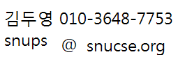

개요
SNUTOC 2015는 서울대학교 컴퓨터공학부 문제풀이 및 알고리즘 동아리 SNUPS에서 주최하고 이스트소프트와 DEVSISTERS가 후원하는 컴퓨터 프로그래밍 경시대회입니다.
ACM-ICPC 대회를 나가는 것을 목표로 하는 서울대학교 대학생 대상의 대회입니다.
주어진 시간 내에 정해진 문제들을 많이 풀어내는 것으로 경쟁합니다. 주로 자료구조, 알고리즘, 간단한 수학 지식과 아이디어를 활용하여 알고리즘을 설계하고 프로그램을 작성하게 됩니다.
- 주최 및 주관: SNUPS
- 후원: 이스트소프트, DEVSISTERS
일정
- 등록: ~ 2015년 9월 12일(토) 늦은 7시까지
- 대회: 2015년 9월 13일(일) 12:30
- 결과 발표 및 시상: 2015년 9월 13일(일) 17:00
- 뒷풀이: TBD
장소
서울대학교 302동 311-1호 소프트웨어 실습실
상품
아이패드 에어, 아이패드 미니, 4k 28인치(72cm) 모니터, 기계식키보드 9대, 보조배터리 5개, exs x10 이어폰 5개, 문화상품권 만원 10개, 참가자 전원에게 쿠키런 캐릭터 상품 증정
참가자 전원에게 대회 중 먹을 수 있는 간단한 간식이 제공됩니다.
※상품은 변경될 수 있습니다.
규정
참가 자격
- 서울대학교 학부생 중 2015 한국 대학생 프로그래밍 경시대회 인터넷 예선 참가에 관심이 있어야 합니다.
한국 대학생 프로그래밍 경시대회 참가 자격에 문제가 없어야 하고, 자격은 여기에서 확인할 수 있습니다.
- C++ 또는 Java로 페이지 하단에 제공된 샘플 문제 같은 문제들을 풀 수 있어야 합니다.
대회 진행
- 기본적으로 2015 한국 대학생 프로그래밍 경시대회의 방식을 따릅니다.
반드시 여기에서 관련 내용을 확인하여야 합니다.
- 진행 시간: 약 4시간
- 단, 팀은 구성하지 않고, 개인전으로 진행합니다. 컴퓨터는 한 명당 한 대만 사용합니다.
- 참고용 책과 노트 등의 자료는 허용합니다. 하지만 참고하는 자료로부터 직접 컴퓨터에 자료를 전송하는 것은 허용하지 않습니다.
- 중도 퇴실은 가능하지만, 시상식에 없을 경우 상품은 없습니다.
출제경향
- ACM-ICPC 대회의 경향을 따릅니다. 한국 대학생 프로그래밍 경시대회 인터넷 예선에 준하는 수준입니다.
- 8~12문제 정도가 출제 됩니다.
- SNUTOC 2014 문제는 다음 링크에서 확인할 수 있습니다. SNUTOC 2014 기출 문제
부정행위 등의 경우
상품을 받을 기회를 박탈 당하고, 강제로 퇴장 당할 수 있습니다. 정도에 따라 이후 대회 참가가 제한될 수 있습니다.
등록
- 신청해주신 분께는 개별적으로 확인 문자를 넣어드립니다.
- 장소가 좁은 관계로 많은 사람이 신청할 경우 조기 마감될 수 있습니다. 최대 50명까지 받습니다.
- 마감되었습니다.
- 참가하지 못하게 된 경우 꼭 연락해주세요.
문의
